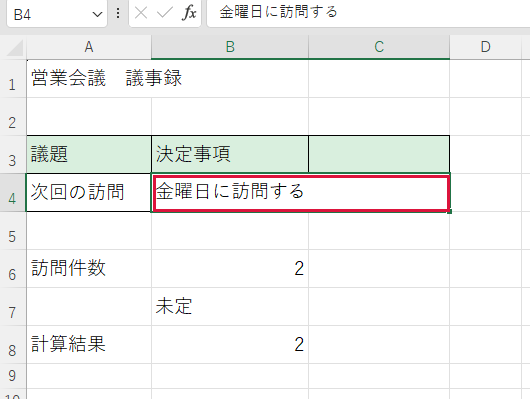
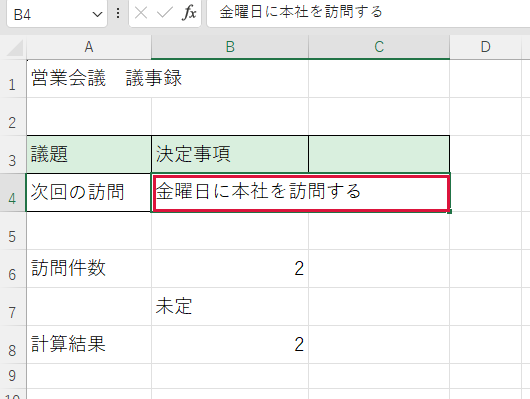

コピーした文章を貼り付けたい


別の文書からコピーした文字を、入力欄に書き足します。
操作手順
- 練習用の欄に「金曜日に訪問する」と入力して確定します。
- この言葉だけをドラッグして選び、Ctrl＋C を押します： 本社を
- Excelに戻り、先ほどの欄をダブルクリックします。「に」と「訪」の間をクリックして縦線を置きます。
- Ctrl＋V を押します。「本社を」が入ったら Enter で確定します。
できたか確認
貼り付け先の前後の文字も残っていますか。
注意点
同じ文章が二重に入ったら、確定前は Esc で今回の編集を取り消せます。